St Peter's is a papal basilica, a parish church, a museum of Renaissance and Baroque art, and the traditional burial place of the apostle Peter, all in one building. It sits on the west bank of the Tiber, on the slope of the Vatican Hill, inside the small sovereign state created by the Lateran Treaty of 1929.
The church you enter is not the church Constantine built. The Constantinian basilica, begun around AD 320–327, stood for twelve centuries and was the largest church in the Western world; it was pulled down in stages from 1506 to make room for this one. The rebuilding took 120 years and outlasted most of its architects. Bramante started it, Raphael and Michelangelo redirected it, Giacomo della Porta closed the dome, Carlo Maderno stretched the plan into a Latin cross and built the facade, and Bernini filled the interior and the square outside.
What survives from the older church is the reason for all of it: the tomb. The high altar stands directly over a small, ancient memorial that pilgrims were already visiting in the second century, and the present building is essentially a monumental canopy held over that point.
From Nero's circus to the new basilica
Before there was a church there was a racecourse. The Circus of Gaius and Nero occupied the flat ground on the Vatican slope, and its spine carried an obelisk shipped from Egypt by Caligula in AD 37 — the same obelisk that now stands in the middle of the square. Peter was executed in Rome under Nero, traditionally in AD 64–67, and Christian tradition places his death in this circus and his burial in a cemetery on the hill above.
That cemetery is real. Excavations under the basilica between 1939 and 1949, ordered by Pius XII, uncovered a small necropolis of pagan and Christian tombs, and at its centre a modest niche built into a wall — known from the second-century presbyter Gaius as the "trophy" of Peter. Whether the bones found nearby are the apostle's has been argued over ever since; Paul VI announced in 1968 that the identification was accepted, and the argument has not entirely stopped. The point for a visitor is simpler: the high altar has been fixed over that spot since the fourth century.
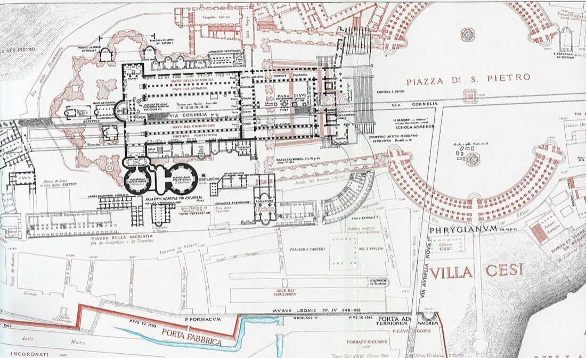
Constantine's basilica was a five-aisled hall with a wide transept, entered through a colonnaded atrium, its nave roughly 110 m long; it was built fast for its size, with reused columns and timber roof trusses. It served for a millennium as the stage for papal and imperial coronations — Charlemagne was crowned in it on Christmas Day 800. By the 15th century it was leaning and half-derelict, and the popes had begun patching it while debating whether to replace it outright.
Julius II decided the question. On 18 April 1506 he laid the foundation stone of a new church, and Bramante produced a design for a vast Greek cross with a central dome, its plan derived from Roman vaulted halls and from the Pantheon. Work began by demolishing the old nave, which is why almost nothing of Constantine's church survives above ground.
Bramante died in 1514. Raphael took over and argued for a Latin cross, better suited to processions; then came Peruzzi and Antonio da Sangallo the Younger, each altering the plan, until the Sack of Rome in 1527 stopped work for years. Michelangelo, appointed in 1546 at the age of 71, cut the plan back to Bramante's centralised scheme, simplified the exterior, and designed the dome — a double-shelled hemisphere with sixteen ribs, close in profile to Brunelleschi's in Florence but heavier and more sculptural. He died in 1564 with the drum and part of the attic built.
The dome was finished in 1590 under Sixtus V by Giacomo della Porta, who steepened Michelangelo's profile toward an oval, and Domenico Fontana, who added the lantern in 1593. Thirty years later Carlo Maderno was told to lengthen the nave to give the church a proper processional axis and a facade large enough for the piazza — the decision behind the familiar complaint that the dome looks smaller than it is, because the nave and facade hide the drum until you are almost at the steps. The church was consecrated by Urban VIII on 18 November 1626; Bernini's bronze baldachin over the high altar followed between 1624 and 1633.
What to look for
The interior is 186 m long and holds a great deal. Nine things repay attention, roughly in the order you meet them.
-
The facade and its inscription
Maderno's facade is 115 m wide and about 46 m high: one giant order of columns and pilasters carrying an attic, crowned by thirteen statues of Christ, John the Baptist and eleven apostles. The scale is rhetorical — it was built to address a square, not a street. Across the attic runs the dedication, IN HONOREM PRINCIPIS APOST, "in honour of the Prince of the Apostles", then Paul V Borghese, PONT MAX, and AN MDCXII PONT VII — 1612, the seventh year of his pontificate. It records the patron, not the completion, which came closer to 1614.
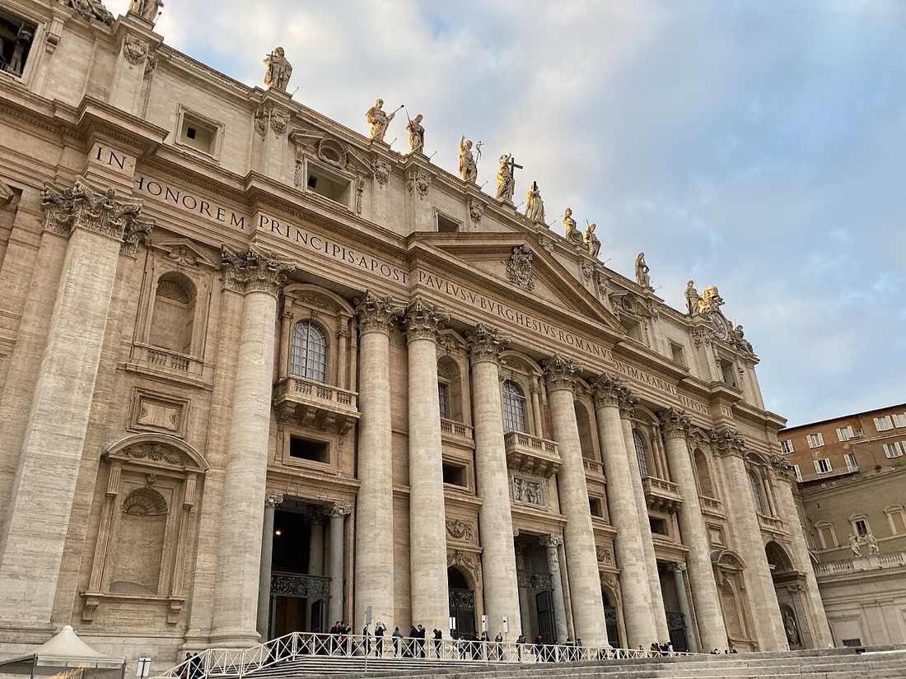
Modussiccandi · CC BY-SA 4.0 · Wikimedia Commons 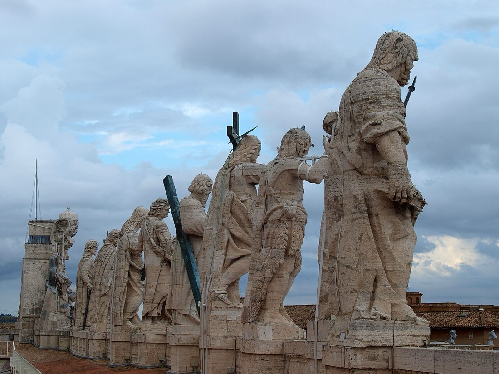
Staselnik · CC BY-SA 3.0 · Wikimedia Commons. The roofline statues: Christ, John the Baptist and the eleven apostles. -
The Holy Door
At the far right of the portico is the Porta Santa, which is not a door in normal use: it is bricked up from the inside and opened only for a Jubilee. The bronze leaves were made in 1949–50 by Vico Consorti, paid for by Swiss Catholics for the Holy Year of 1950, and their sixteen panels trace the history of salvation. The pope opens it at the start of a holy year and it is sealed at the close — most recently opened for the Jubilee of 2025 and walled up again in January 2026. Passing through it stands for the passage from sin into grace.
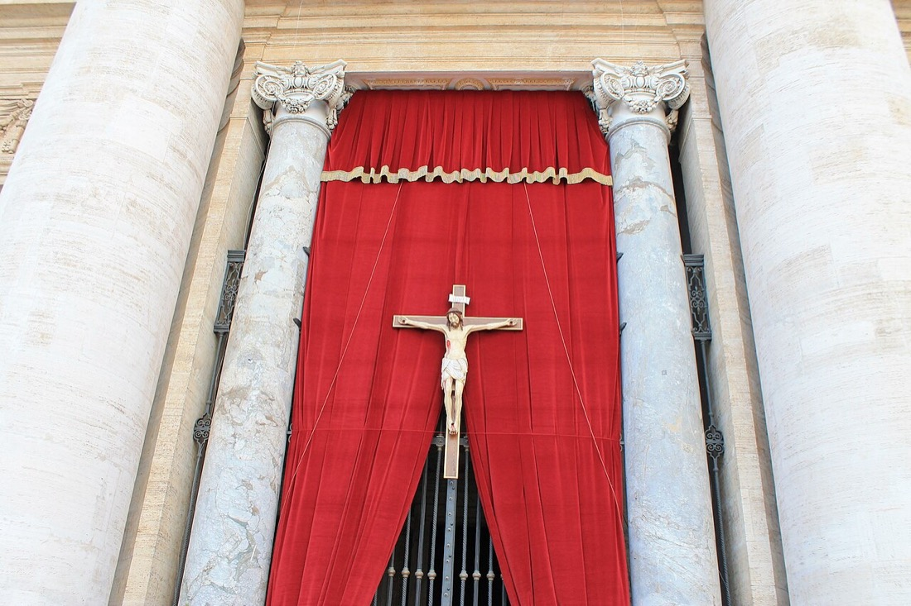
John Samuel · CC BY-SA 4.0 · Wikimedia Commons. The Porta Santa between Jubilees: bricked up and covered by a red curtain. 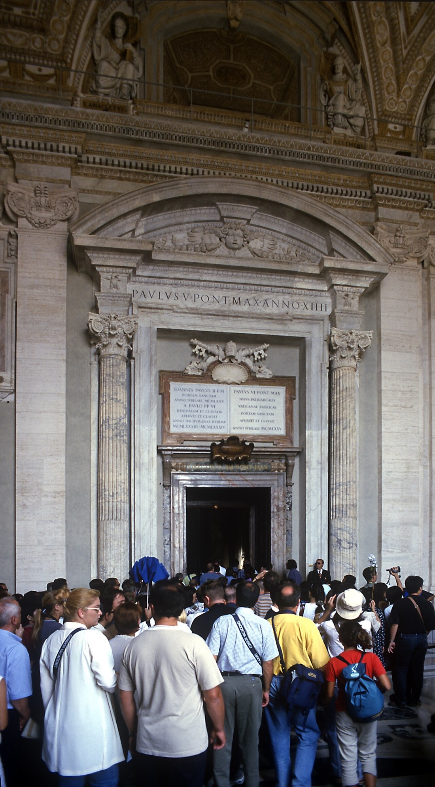
Falk2 · CC BY-SA 4.0 · Wikimedia Commons. Pilgrims at the door during a Jubilee. -
Michelangelo's Pietà
In the first chapel on the right aisle, behind glass, is the marble group Michelangelo carved in 1498–1499 for the French cardinal Jean de Bilhères. The Virgin is young and composed, holding her dead son across her lap; the folds of her dress are carved so thinly that they read as cloth rather than stone. It is the only work Michelangelo signed — his name is cut into the sash across her chest. On 15 May 1972 a visitor attacked it with a hammer, breaking her arm and nose; the restored sculpture has been behind bulletproof glass ever since.
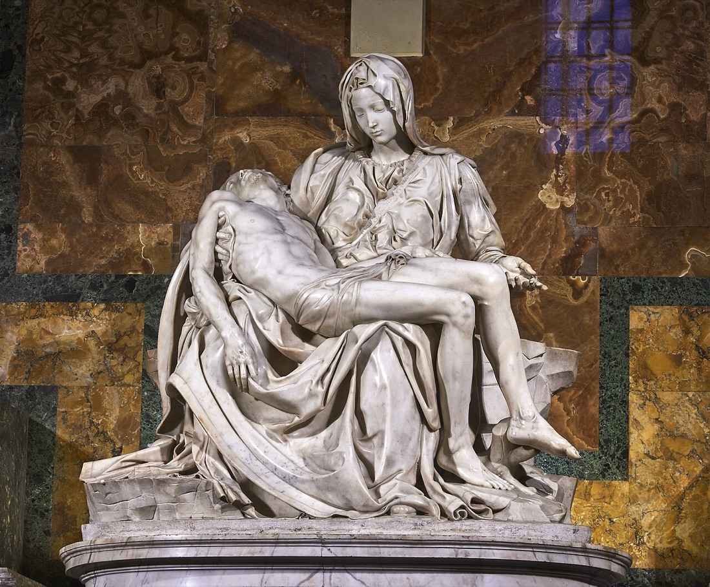
Juan M Romero · CC BY-SA 4.0 · Wikimedia Commons 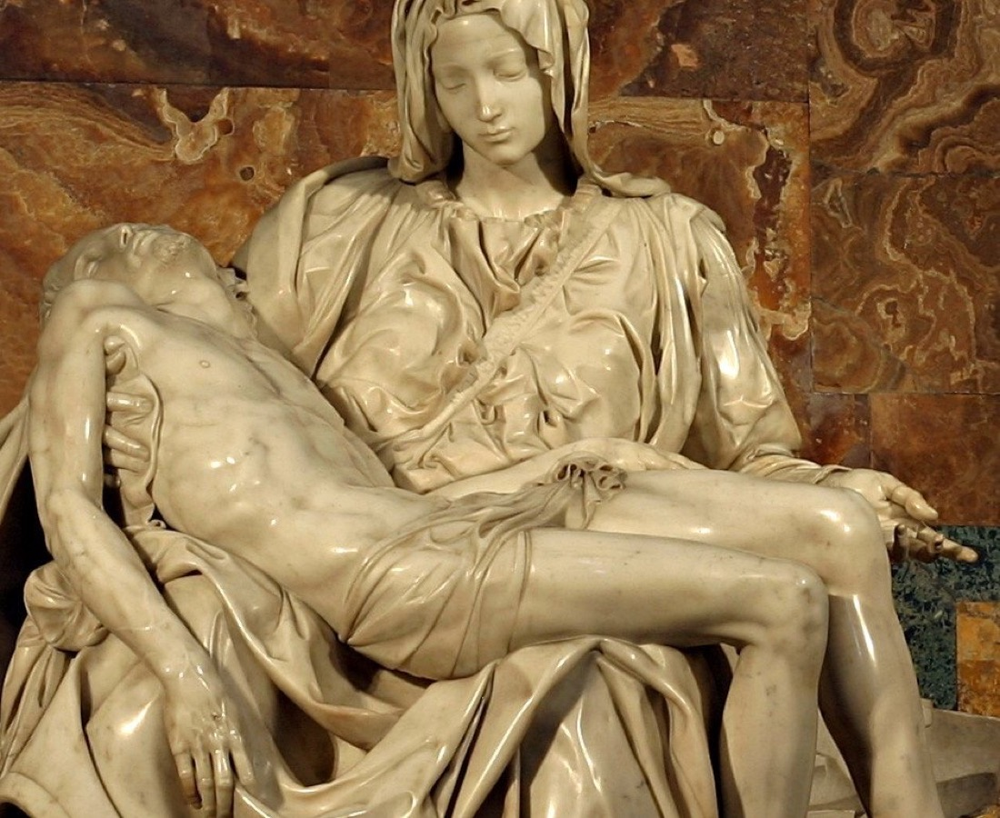
Stanislav Traykov , Niabot (cut out) · CC BY 2.5 · Wikimedia Commons. The Pietà in detail: the Virgin's face and the marble fold of her veil. -
Bernini's baldachin
Under the dome, over the high altar and directly above the tomb, stands Bernini's bronze canopy, begun in 1624 and finished in 1633. It is about 29 m tall and its four columns spiral upward in a form borrowed from the ancient columns believed to have stood in Solomon's Temple — the same shape as the relic columns set into the piers of the crossing. The bronze is traditionally said to have been stripped from the portico roof of the Pantheon, which produced the Roman lampoon quod non fecerunt barbari, fecerunt Barberini ("what the barbarians did not do, the Barberini did"), aimed at Urban VIII. Some of the metal certainly came from there; how much is disputed, and much of it came from elsewhere.
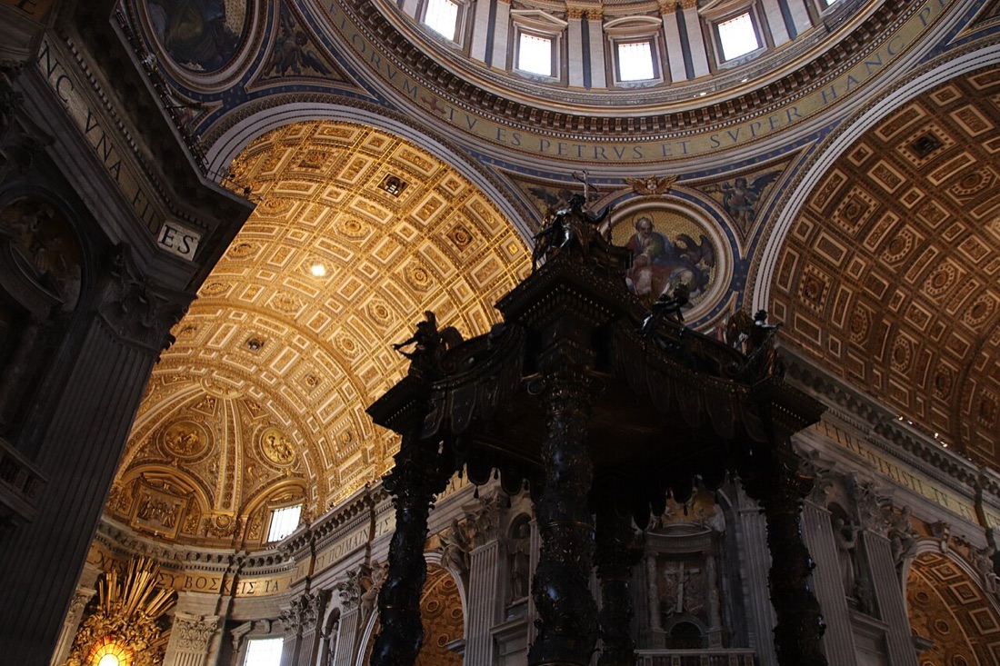
Gary Todd · public domain · Wikimedia Commons 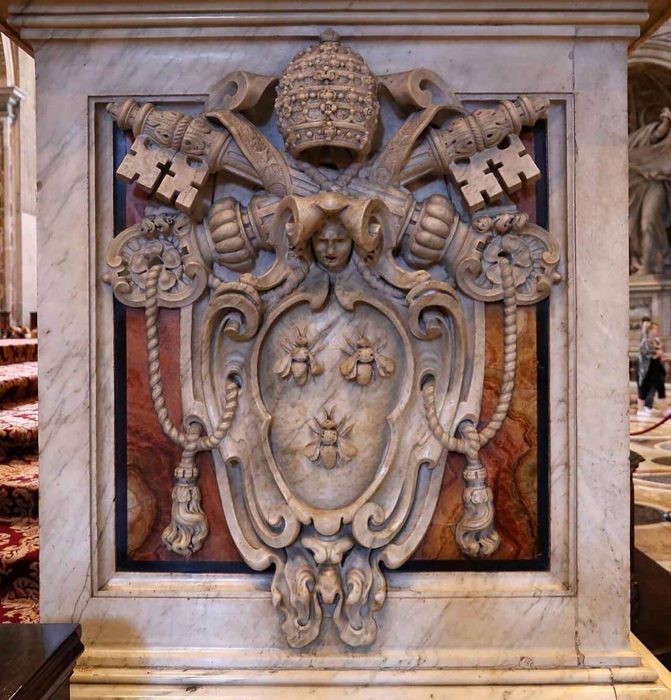
Sailko · CC BY 3.0 · Wikimedia Commons. The Barberini bees on the baldachin, the pope's arms on the monument his family paid for. -
The dome and its mosaics
Look up from the crossing. The dome's interior is entirely mosaic: every "painting" at that height is glass and stone tesserae, partly because fresco would not survive the damp. Around the drum runs Matthew 16:18–19 in letters metres high, TV ES PETRVS ET SVPER HANC PETRAM AEDIFICABO ECCLESIAM MEAM. The Evangelists sit in the pendentives beneath, and the four piers of the crossing hold the veil of Veronica, the lance of Longinus, a fragment of the True Cross and the head of Andrew. The dome is about 42 m across internally, a little narrower than the Pantheon's 43.3 m, with roughly 137 m to the top of the cross.
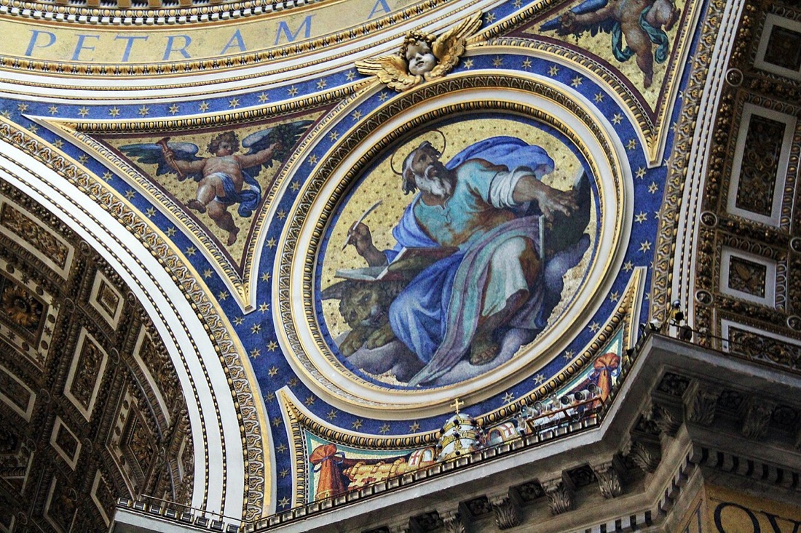
Karelj · public domain · Wikimedia Commons 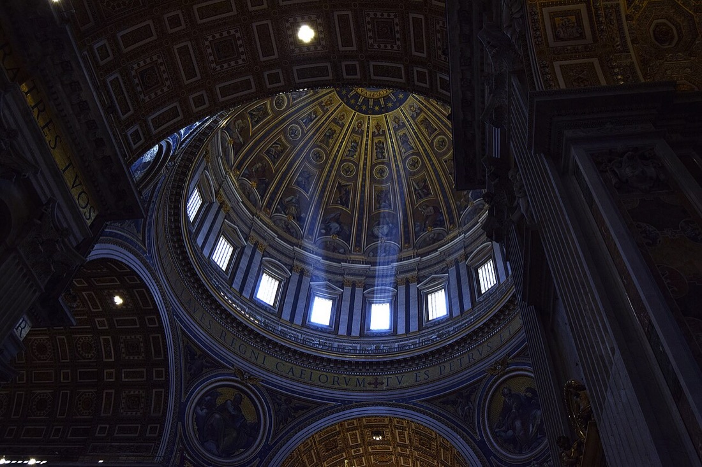
BarbaRossa20 · CC BY-SA 4.0 · Wikimedia Commons. The dome from the crossing: mosaic, not fresco, covers every surface. -
The Chair of Peter
In the apse at the far end, framed by a burst of golden light, is Bernini's Cathedra Petri, made between 1657 and 1666. The chair itself is a gilt-bronze reliquary casing held up by four colossal figures of the Doctors of the Church — Ambrose and Augustine in the West, Athanasius and John Chrysostom in the East — and inside sits a wooden chair that the Vatican dates to the 9th century and traditionally links to a gift from Charles the Bald. Behind it, in a window of yellow alabaster, the dove of the Holy Spirit scatters light through the gilt rays.
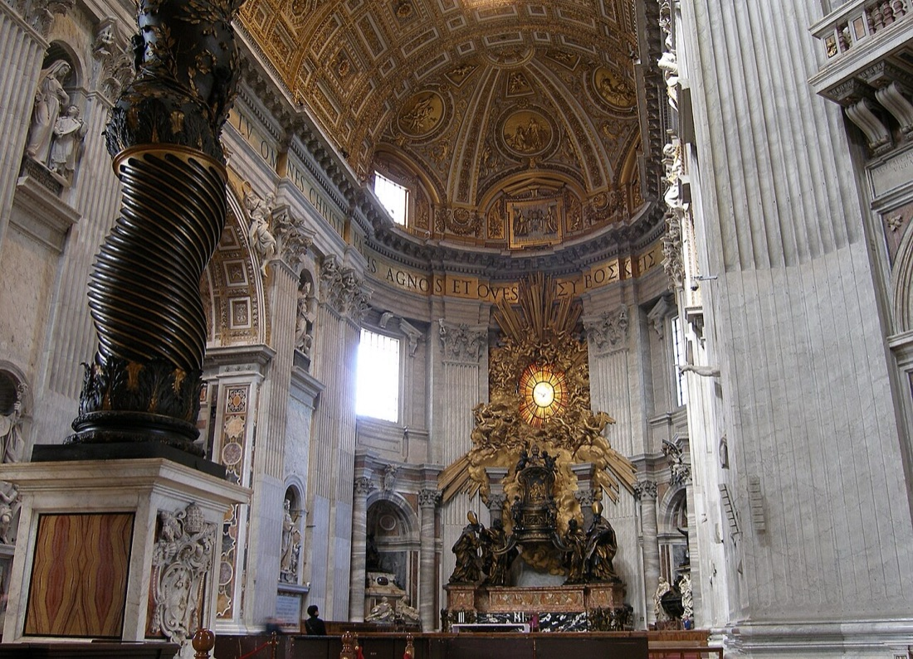
Dnalor 01 · CC BY-SA 3.0 · Wikimedia Commons 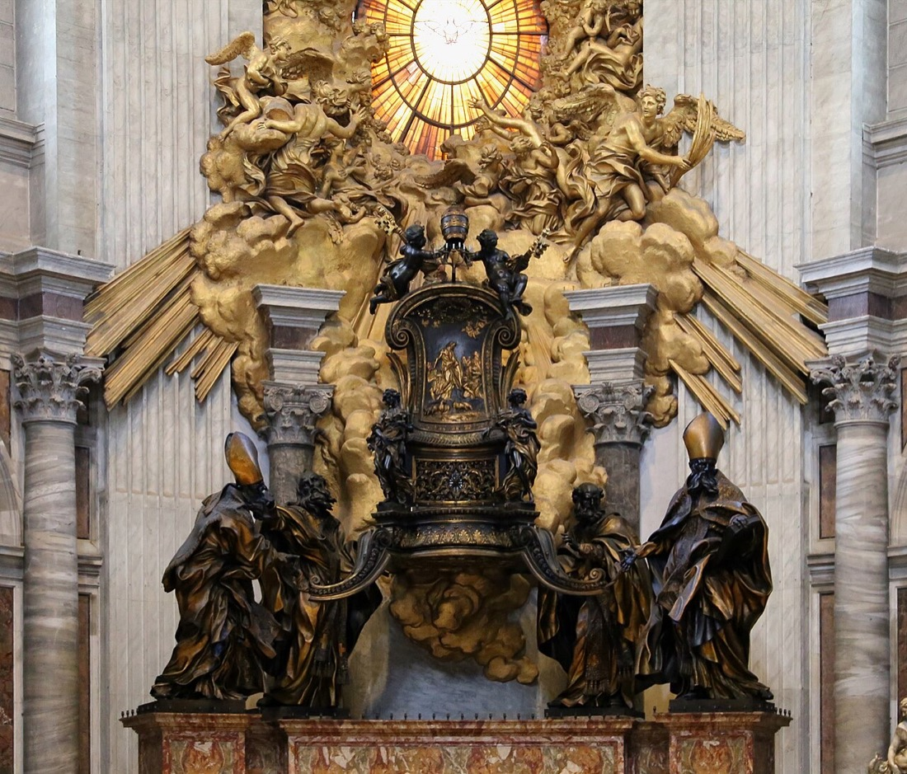
Sailko · CC BY 3.0 · Wikimedia Commons. The four Doctors of the Church beneath the Chair. -
The floor measurements and the shape of the square
In the nave, brass strips in the pavement give the internal length of other great churches — Milan Cathedral, St Paul's in London and others — beside St Peter's own, so the comparison can be read underfoot. Outside, Bernini's colonnade makes a related argument in geometry: four rows of columns, 284 in all, curving out in two arms round an ellipse about 240 m wide. The arms never quite close, so the piazza opens toward the Via della Conciliazione; from the marked focal points on the pavement, the four rows line up into one.
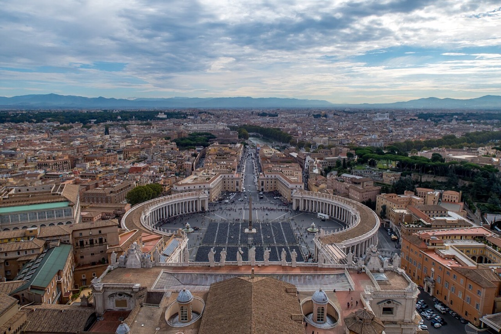
Capilleary · CC BY-SA 4.0 · Wikimedia Commons 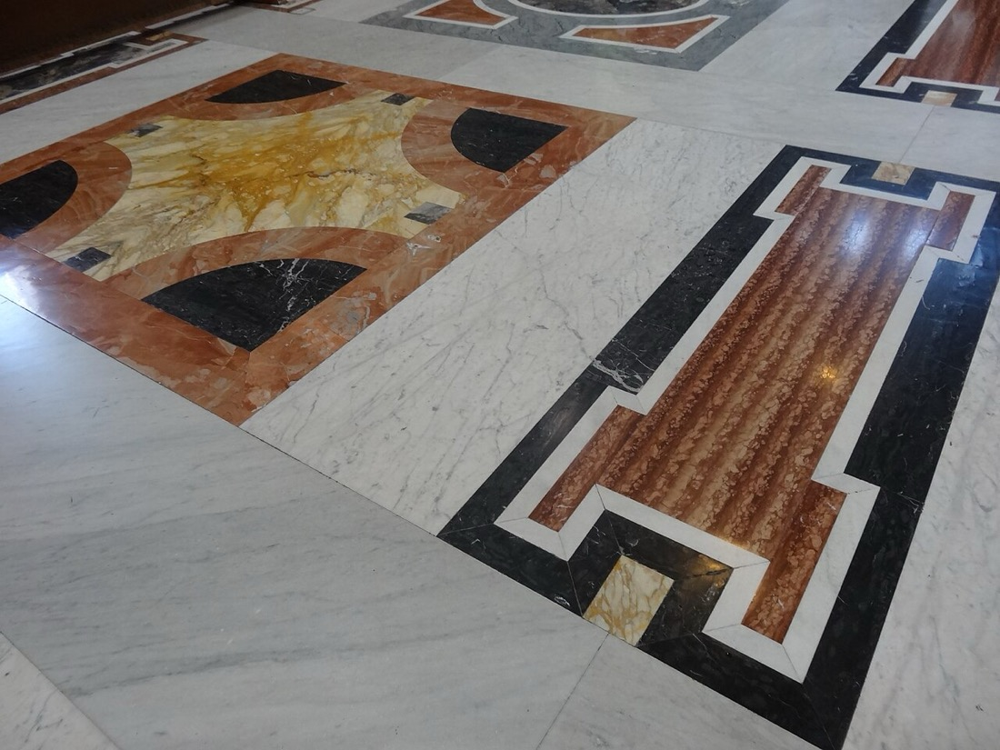
Jordiferrer · CC BY-SA 4.0 · Wikimedia Commons. The cosmatesque pavement; the brass measurement strips are set into it. -
The crossing piers and their relics
The four piers that carry the dome are not solid blocks: each holds a relic and a colossal statue in a niche above. Veronica holds her veil, Longinus the lance, Helena the fragment of the True Cross, Andrew his head. The statues were made in the 1620s and 1630s by Mochi, Bernini, Bolgi and Duquesnoy — Veronica's twist, Longinus's raised arm — and their gestures are designed to be read from the floor far below.
The relics are not on display; they belong to the building's function, not its museum. But the arrangement explains why the crossing feels like the centre of a system rather than an empty space under a dome.
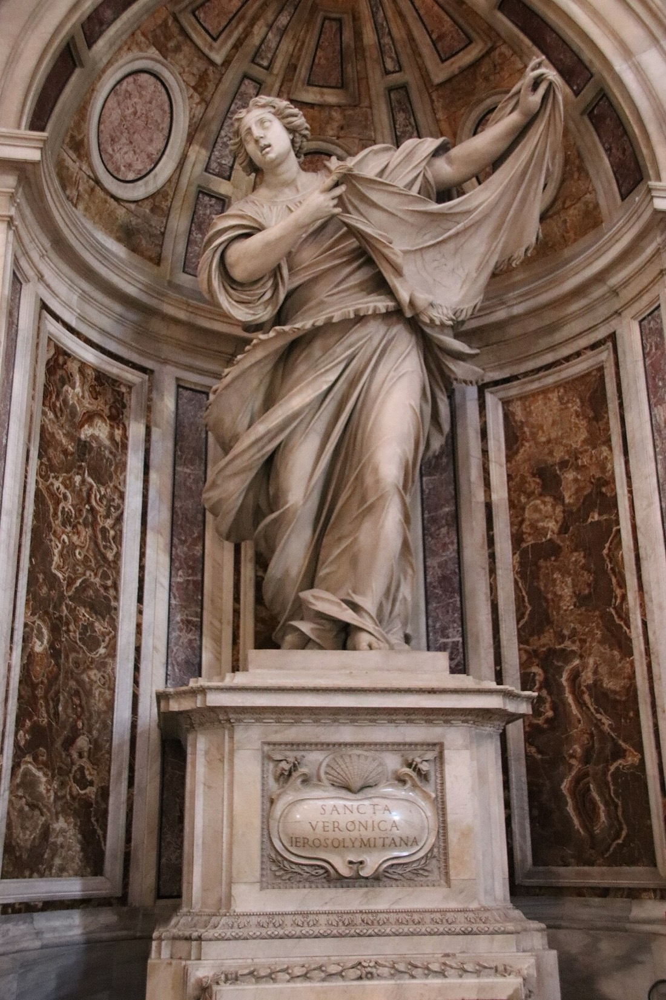
Gary Todd from Xinzheng, China · Public domain · Wikimedia Commons. Veronica, one of the four colossal statues on the crossing piers. 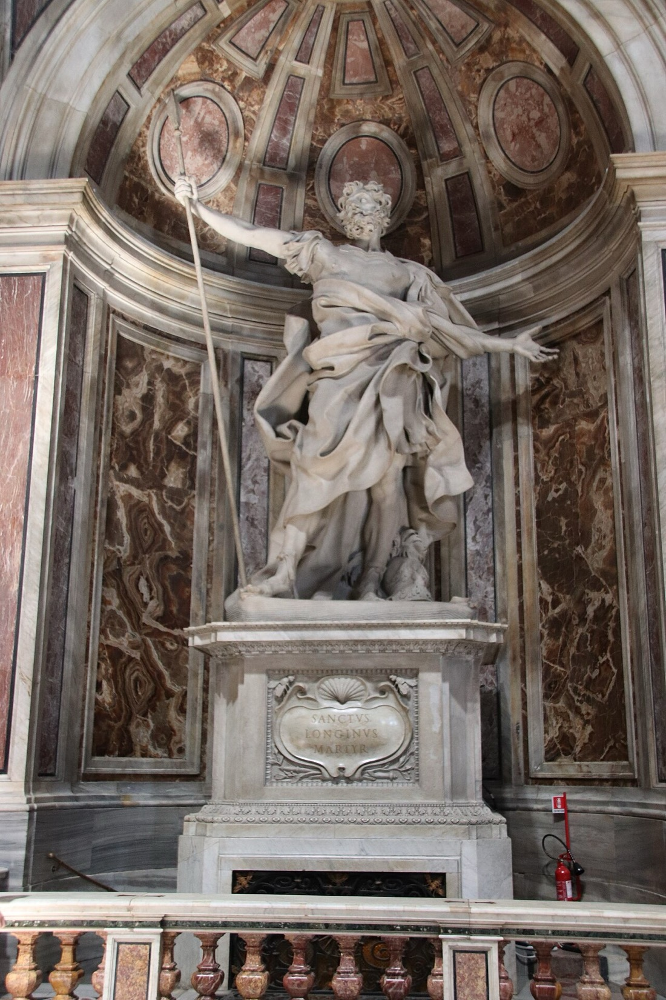
Gary Todd from Xinzheng, China · Public domain · Wikimedia Commons. Longinus, the soldier who pierced Christ's side, on the opposite pier. -
The bronze St Peter
At the end of the nave, against one of the crossing piers, sits a bronze figure of Peter enthroned, right hand raised, keys in the left. It is attributed to Arnolfo di Cambio and dated to the late 13th century; the setting around it is later. The right foot projects forward and has been worn smooth by centuries of pilgrims' hands and lips — the one part of the statue that is unmistakably touched.
It is easy to walk past. Stop: the scale is smaller than the surrounding marble, and the wear on the foot is a better measure of devotion than any inscription.
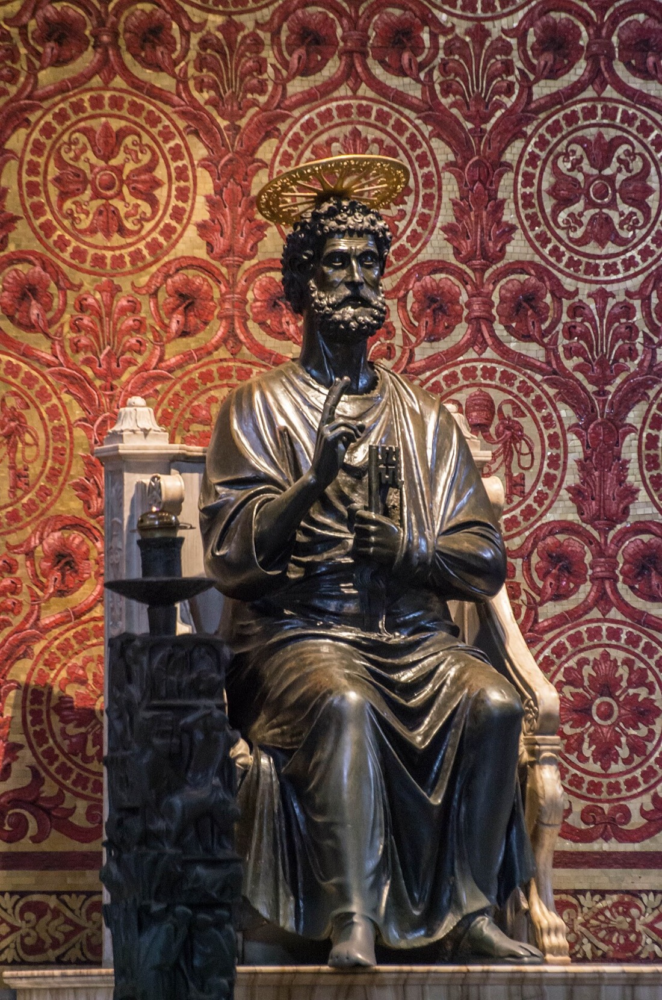
Antoine Taveneaux · CC BY-SA 3.0 · Wikimedia Commons. The bronze Peter, attributed to Arnolfo di Cambio. 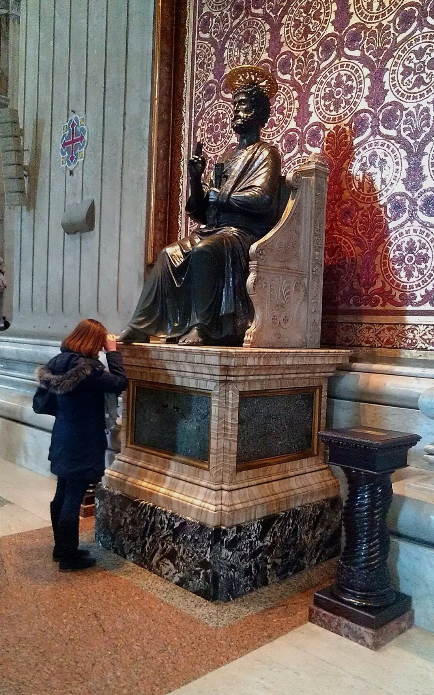
Ethan Doyle White · CC BY-SA 4.0 · Wikimedia Commons. The foot, worn smooth by pilgrims' hands and lips.


.jpg){kind=link}

,_1623-1634_(48466540897).jpg){kind=link}


.jpg){kind=link}


.jpg){kind=link}
.jpg){kind=link}


The making of a pilgrimage church
The building is administered by the Fabbrica di San Pietro, the works office that has run construction, conservation and the daily liturgy since the 16th century, and still keeps its own marble workshop, mosaic studio and carpentry shop. That continuity is unusual: most great churches are managed by heritage agencies, while St Peter's is maintained by an institution whose reason for existing is the building itself.
The pilgrim route through the interior runs from the door to the confessio, the sunken chapel in front of the high altar, where a curved balustrade of marble and gilt bronze lets you look down toward the tomb. A statue of Peter in bronze, attributed to Arnolfo di Cambio and made in the late 13th century, sits against a pier near the crossing; its right foot has been worn smooth and slightly hollow by centuries of pilgrims touching it. Conservators have repaired the toes but not resurfaced the foot, on the principle that the wear is itself part of the object.
The wear on the foot is the only place in the basilica where you can see the crowd.The statue of Peter, north-east pier of the crossing
Below the floor is another church entirely. The Vatican Grottoes occupy the space between the Constantinian pavement and the present one, a low, wide corridor of chapels and tombs that includes the graves of many popes — Pius XII, Paul VI, John Paul I, John Paul II (until his body was moved up into the Chapel of St Sebastian after his beatification in 2011) and Benedict XVI, buried there in 2023. The grottoes are free to enter from inside the basilica, and they are usually quieter than the church above. Deeper still, and reachable only by written request and a guided visit, are the excavated Roman necropolis and the memorial to Peter.
Almost every pope since the 16th century has left something here: a tomb, an altar, a mosaic, a clock. The result is less a single work of art than a record of patronage, with the Chigi, Borghese, Barberini and Farnese programmes layered on one another. What you are walking through is an argument about the papacy conducted in marble over four hundred years.
Visiting
St Peter's is a working church, not an attraction with a turnstile. As of 2026 entry to the basilica is free, with no ticket or booking for the church itself; you join the queue in the square and pass through airport-style security screening at the foot of the steps. The line moves faster than it looks, but can still take an hour at mid-morning in high season. Hours are roughly 07:00–19:00 from April to September and 07:00–18:30 from October to March, but they shift with the liturgical calendar — check the official site rather than trusting any published table, including this one.
Dress is enforced at the security check: shoulders and knees covered, hats off inside. Large bags and tripods are not allowed, and there is no cloakroom for luggage. Photography without flash is permitted; silence is expected in the chapels and around the confessio, and Mass is celebrated at side altars through the morning, so parts of the church may be roped off.
The dome is a separate visit with its own ticket, bought at the entrance on the right of the portico or in advance online. There are two routes: a lift to the roof terrace followed by about 320 steps inside the drum, or the full climb of roughly 551 steps. Either way you end at the lantern, with a view over the square and the city; the gallery inside the drum, level with the mosaics, is worth the stop. The climb is narrow, unventilated in summer and unsuitable for anyone uncomfortable with confined spiral stairs.
Sundays are the busiest day and the least convenient for sightseeing, since the church is in full liturgical use and access to parts of the interior is restricted. For the building rather than the congregation, go on a weekday at opening time. The Grottoes and the dome both close earlier than the basilica, so do them first.
The Vatican Museums and Sistine Chapel are a separate complex with their own entrance on Viale Vaticano and their own ticket; book a timed slot in advance from the official Musei Vaticani site. The museum exit does not lead into the basilica. The scavi, the excavations under the church, are booked separately through the Fabbrica di San Pietro, in writing, in small groups, often months ahead.
Practical details last checked in 2026; verify hours, tickets and closures at vatican.va and the basilica's own pages before travelling.